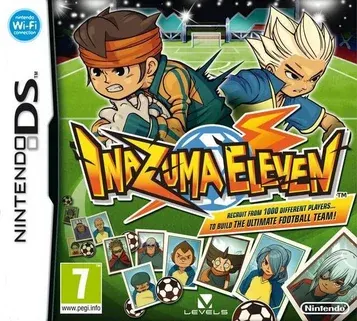

Inazuma Eleven
Mamoru precisa reconstruir o clube do Raimon e transformar um grupo de estudantes em uma equipe capaz de disputar o Football Frontier.
Destaque: é a base de toda a franquia e apresenta o recrutamento, as primeiras técnicas e os rivais que definem a identidade do Raimon.